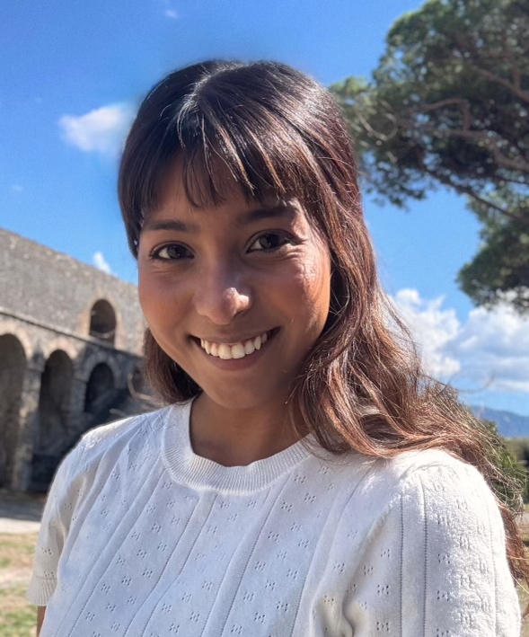

|
Navya Annapareddy I am currently a third year Data Science PhD candidate at the University of Virginia (UVA) advised by Professor Stephen Baek in the Visual Intelligence Laboratory. My research focuses on the development and application of novel methods for pose estimation and characteristic motion analysis. I'm honored to have previously been supported by the Center for Teaching Excellence Scholarship of Teaching and Learning (SoTL) Fellowship, the National Academies of Sciences and Medicine Graduate Research Award (GTA), and the Commonwealth of Virginia Engineering and Science Policy Fellowship (COVES) under the Joint Commission of Technology. Prior to this, I worked as a Data Scientist for Smile Identity, a biometrics company that utilizes machine learning for equitable facial recognition across skintones and ethnicities. I received my B.S. in Systems Engineering and M.S in Data Science at UVA, where I worked on multimodal pedestrian detection and OCR applications. Outside of the lab and classroom, I enjoy reading, film photography, and obtaining new vinyls. |
 |
{kind=link}
ResearchI'm interested in computer vision, pose estimation, deep learning, generative AI, and image/video processing. Most of my research is about inferring the physical world (shape, motion, color, light, etc) from images. Selected papers are highlighted below. |

|
Bolt3D: Generating 3D Scenes in Seconds
Stanislaw Szymanowicz, Jason Y. Zhang, Pratul Srinivasan, Ruiqi Gao, Arthur Brussee, Aleksander Holynski, Ricardo Martin-Brualla, Jonathan T. Barron, Philipp Henzler arXiv, 2025 project page / arXiv By training a latent diffusion model to directly output 3D Gaussians we enable fast (~6 seconds on a single GPU) feed-forward 3D scene generation. |

|
Cleaning the USNO-B Catalog Through Automatic Detection of Optical Artifacts
Jonathan T. Barron, Christopher Stumm, David W. Hogg, Dustin Lang, Sam Roweis The Astronomical Journal, 135, 2008 We use computer vision techniques to identify and remove diffraction spikes and reflection halos in the USNO-B Catalog. In use at Astrometry.net |
Miscellanea |
|
Source code adapted from Jon Barron. |